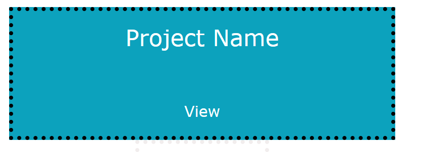
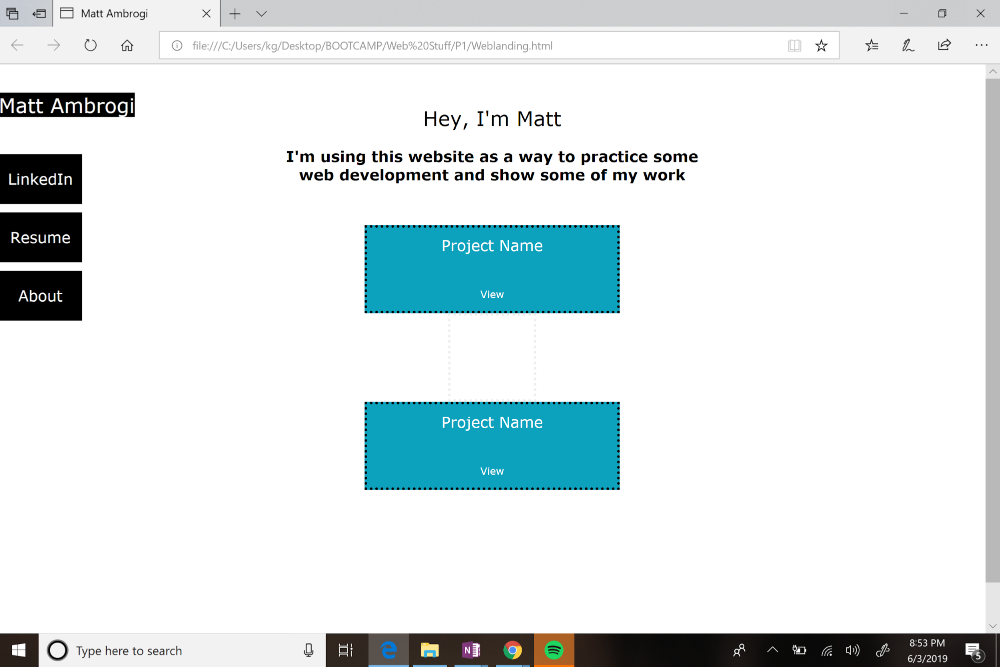

Day 1:
- Idea
- Starting by diving into web development
- In school, took object oriented classes. Gave me great base for understanding algorithms, data structures, and how to logically break down problems
- This gave me the ability to create cool programs
- But, what is this worth if I can’t integrate it with a website/app for users to interact with?
- Tools
- Diving in with HTML and CSS
- Used bootstrap in past and think I will but I thought I should go back a step and understand CSS more
- I think this will be valuable
- Will allow me to understand what is happening with frameworks, where they are useful, and how to override them
- Want to integrate with angular or react
- Could write straight up javascript, but would like to use these frameworks
- Have experience with angular, so thinking I’d try react
- A lot of areas where if I just had someone to ask, could be tremendously streamlined. Internet helps, but often find a bunch of conflicting opinions
- Examples
- What type of element should I use?
- What type of positioning is best practice? Do I use static, absolute, relative? When to use each?
- Example: how to center text inside something
- 
- Did project div with project body div inside
- Name is project body a and link to view is project body b
- Project static, margin auto to center, text align center
- A and b relative so can move height and display as inline-block

Day 2:
Learning
- Class applies to all, can use id to specify one instance within
- For example, each project has same formatting, but each also links to different page
- Links need an <a> tag
- Embedding google doc
- Can’t easily alter view - api just pulling content from somewhere else
- Create custom style sheet
- Load after bootstrap
- Here’s a huge page of text. Are people writing that all in an html document?